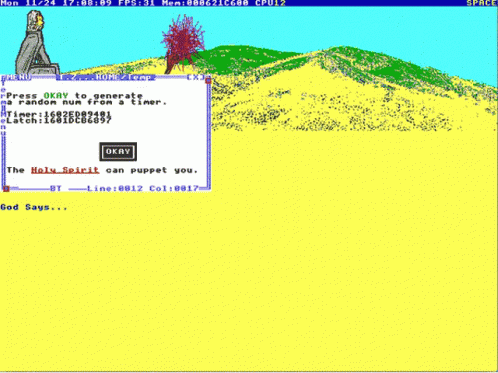

TempleOS is a biblical 64-bit operating system designed to be the Third Temple prophesied in the Bible. Initial release was in 2005. TempleOS is entirely written in HolyC and fits into 1.44MB floppy
TempleOS includes:
- Bootloader
- Kernel
- Window manager
- Graphics library
- Games

